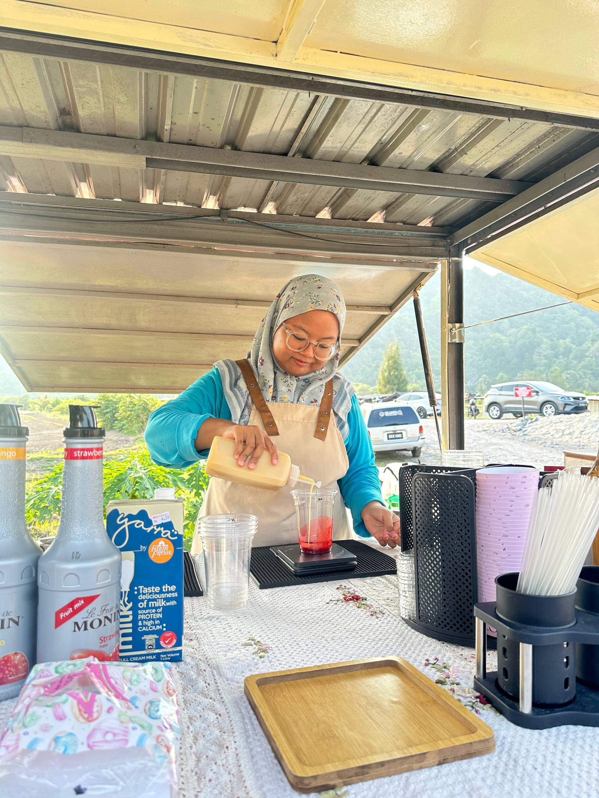

Welcome to Nayss Sipss!
Experience the authentic flavors of our freshly brewed Vietnamese Coffee and premium Matcha, nestled in the heart of Kampung Wai, Kuala Perlis. We invite you to unwind and savor our unique, handcrafted beverages—meticulously prepared to ensure every sip is a delight, all offered at an affordable price.
Owner Profile
Name: Nuranyssa Aiyanie Binti Aznan
Position: Owner & Founder
Education: Bachelor of Mechanical Engineering (UPM)
Hometown: Perlis
"Nayss Sipss was established in 2024, born from a deep-rooted passion for entrepreneurship and a vision to bring a unique coffee culture to my hometown. My goal is to create a space where quality and community meet in every cup."
